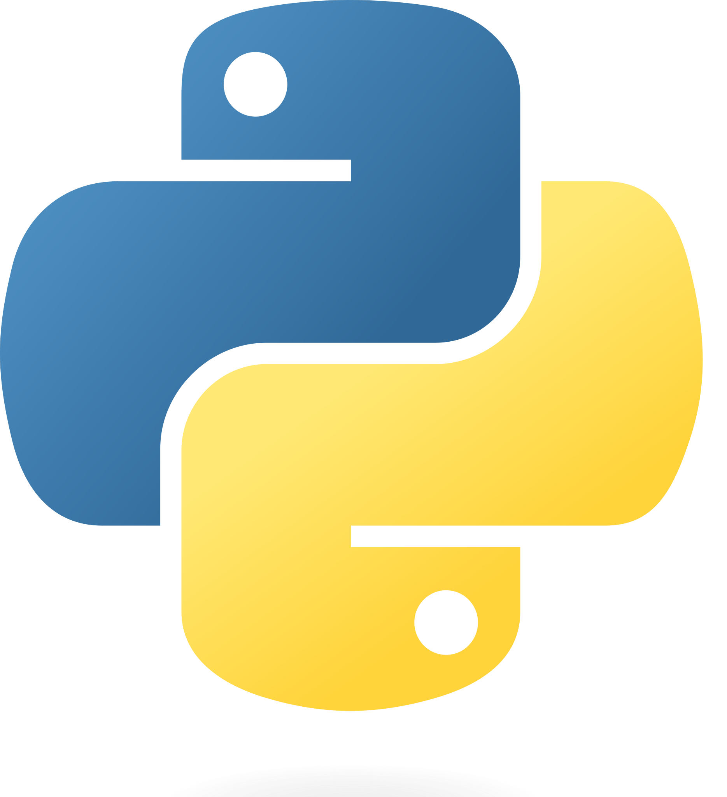
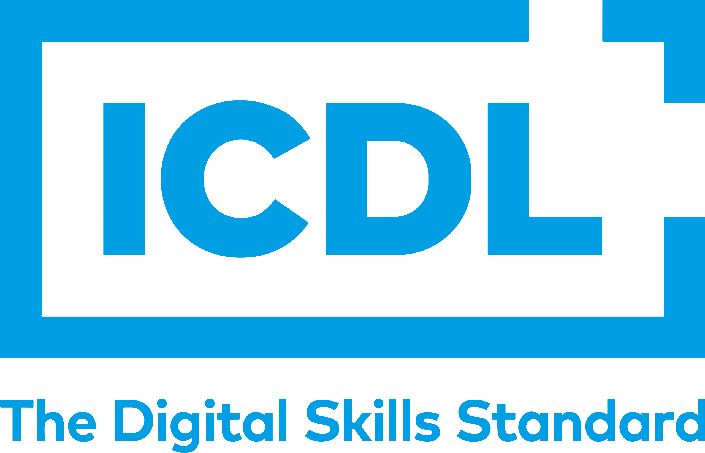
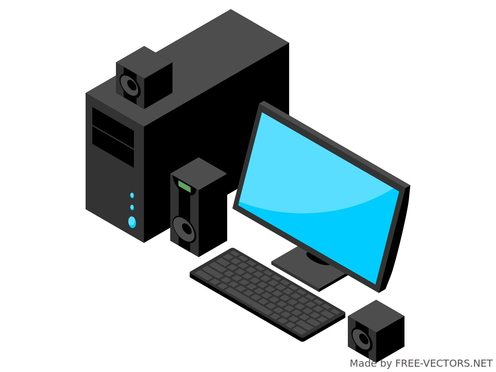
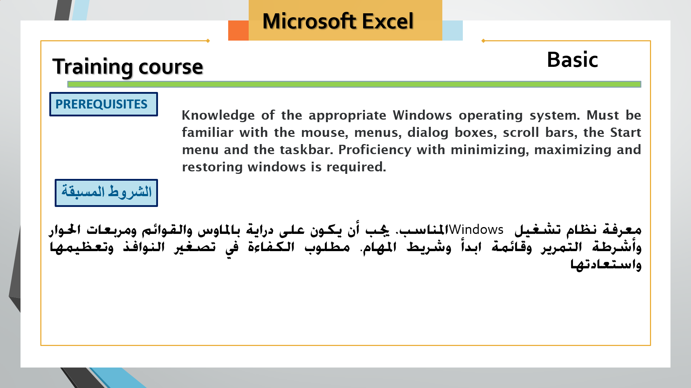

مكتبة الدورات التعليمية
اكتشف مجالًا يناسب هدفك، ثم انتقل إلى المسار والدروس والموارد العملية خطوة بخطوة.
كل مجال يفتح لك طريقًا جديدًا
ابدأ من المركز، واختر عقدة المجال الذي تريد استكشافه. كل نقطة تقودك إلى موارده ومساراته المتاحة.
كل المجالات مفتوحة للاستكشاف. اختر عقدة لعرض مساراتها.
عرض كل المسارات ↙تختلف أدوات الاختبار ومتابعة التقدم حسب المسار وإعدادات حساب الطالب.
استكشف كل المسارات
اختر مجالًا من الخريطة لتظهر المسارات المرتبطة به هنا.
الإدارة والأعمال
مسار البكالوريا المصرية: فهم منظمات الأعمال والقرارات وأصحاب المصلحة والبيئة والإدارة.
فتح المسار ←البرمجة
مسار لتعلّم أساسيات البرمجة، والانتقال إلى التطبيق من خلال أنشطة ومشروعات صغيرة.
فتح المسار ←
Python
صفحة تعليم أساسيات Python من الموقع القديم.
فتح المسار ←Scratch — البرمجة للأطفال
تعليم البرمجة للأطفال باستخدام أنشطة مرئية ومشروعات صغيرة.
فتح المسار ←
ICDL ومهارات الكمبيوتر
مسار لمهارات الكمبيوتر والإنترنت وبرامج Microsoft Office.
فتح المسار ←
Windows والإنترنت
أساسيات الكمبيوتر والإنترنت وإدارة الملفات والتطبيقات والشبكات والبريد الإلكتروني.
فتح المسار ←Microsoft Word
معالجة النصوص وتنسيق المستندات وإعداد التقارير والسير الذاتية.
فتح المسار ←Microsoft PowerPoint
إنشاء عروض تقديمية منظمة باستخدام النصوص والصور والجداول والرسوم والصوت والفيديو.
فتح المسار ←
Microsoft Excel
تنظيم البيانات وإجراء العمليات الحسابية وتحليل البيانات وإنشاء التقارير والرسوم البيانية.
فتح المسار ←تحليل البيانات
استخدام أدوات التحليل ولوحات المعلومات لتحويل البيانات إلى مؤشرات تساعد على اتخاذ القرار.
فتح المسار ←المحتوى التعليمي
فهرس المسارات التعليمية الموجودة في موقعك القديم.
فتح المسار ←المشروعات الجاهزة
نماذج مشروعات عملية واردة في الموقع القديم.
فتح المسار ←السيرة الذاتية والشهادات
ملفات السيرة الذاتية وصور صفحة الشهادات.
فتح الصفحة ←لم نعثر على نتائج مطابقة. جرّب كلمة أخرى أو اختر عرض كل المسارات.